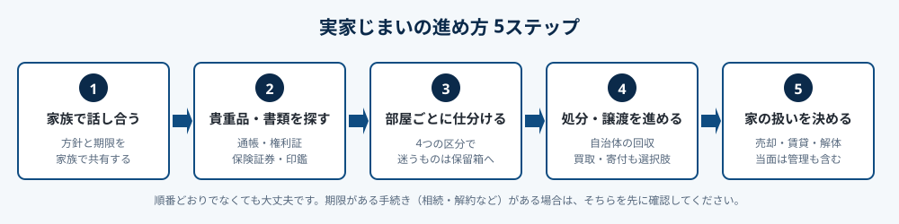
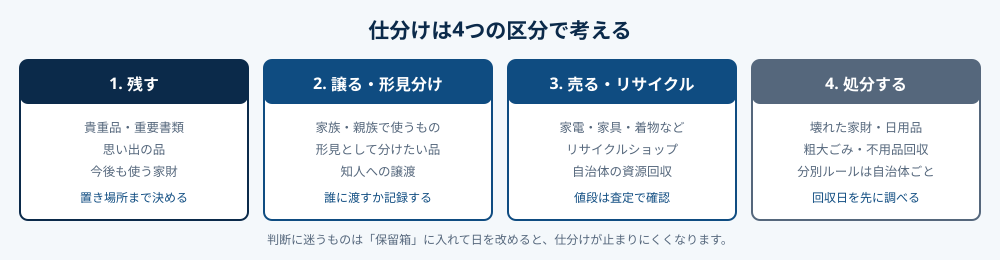

実家じまいが大変なのは、荷物の量そのものよりも、「何から手を付けるか分からない」「家族の考えがそろっていない」という出発点の問題が大きいからです。この記事では、実家じまい全体を5つのステップに分け、各ステップでやることと、つまずきやすい点を順番に整理します。

ステップ1：家族で話し合う（方針と期限）
最初にやるのは片付けではなく、話し合いです。決めておきたいのは、（a）いつまでに片付けを終えたいか、（b）家をどうするつもりか（売る・貸す・当面は管理する）、（c）誰が何を担当するか、の3点です。親が存命であれば、本人の希望を聞く場でもあります。「捨てる話」から入ると身構えられやすいので、「物の置き場所を一緒に確認したい」という切り口が進めやすいでしょう。
きょうだいがいる場合は、この段階で費用の分担（処分費や交通費を誰が出すか）も軽く触れておくと、後半の揉め事を減らせます。
ステップ2：貴重品・重要書類を探す
仕分けの前に、家全体で「無くなると困るもの」の所在を確認します。対象は次のようなものです。
所在を確認しておくもの
- 預金通帳・キャッシュカード・印鑑（銀行印）
- 不動産の権利証（登記識別情報）・固定資産税の納税通知書
- 保険証券（生命保険・火災保険など）
- 年金手帳・健康保険証・マイナンバーカード
- 現金・貴金属・有価証券類
- 借入や契約が分かる書類（ローン、リース、定期購読など）
- スマートフォンやパソコンのパスワードの手がかり
見つけた場所は、家族で共有できる形（メモや一覧）で記録しておきます。特に現金や貴重品は、相続に関わる場合があるため、見つけた事実と保管場所を家族に共有してから動かすのが安全です。
ステップ3：部屋ごとに仕分ける（4区分）
貴重品の確認が終わったら、部屋を1つずつ仕分けます。一度に家全体を相手にせず、「今日は台所だけ」のように範囲を区切るのが継続のコツです。仕分けの区分は4つに絞ります。

| 残す | 貴重品・書類・思い出の品・今後使う家財 | 置き場所（誰の家に置くか）まで決める |
| 譲る・形見分け | 家族や親族が使うもの、形見として分けたい品 | 誰に渡したかを記録しておくと行き違いが減る |
| 売る・リサイクル | 家電・家具・着物・金属製品など | 買取の可否と値段は査定を受けて確認する |
| 処分する | 壊れた家財、使い切れない日用品 | 分別と回収のルールは自治体ごとに異なる |
思い出の品は判断に時間がかかるため、無理にその場で結論を出さず「保留箱」を用意してください。箱に入れて日を改めると、感情が落ち着いてから判断できます。
ステップ4：処分・譲渡を進める
仕分けが進んだら、区分ごとに出口を動かします。処分の方法は主に次の4つで、自治体のルールや回収日は地域によって異なるため、お住まいの自治体の案内で確認してください。
- 自治体のごみ・資源回収：分別ルールと粗大ごみの申込方法は自治体ごとに異なります。回収日が限られるため、早めに日程を確認します。
- リサイクルショップ・買取：家電や家具は状態によって買取対象になります。家電リサイクル法の対象品目（エアコン、テレビ、冷蔵庫・冷凍庫、洗濯機・衣類乾燥機）は、処分方法が法律で決まっているため、販売店や自治体の案内に従います。
- 譲渡・寄付：家族や知人に譲る場合は、受け取り側の都合を先に確認します。
- 不用品回収・整理業者：量が多い場合や期限がある場合は、業者に部分的に頼む方法もあります。頼み方は遺品整理業者に頼む場合の記事で整理しています。
ステップ5：家の扱いを決める
中身が片付いたら、家そのものの扱いを決めます。選択肢は「売却する」「賃貸に出す」「解体して更地にする」「当面は空き家として管理する」などです。どの選択肢でも、家の名義（登記）がどうなっているかの確認が前提になります。相続した家の名義変更（相続登記）には期限の定めがあるため、該当する場合は司法書士などの専門家や法務局の案内で確認してください。
当面住まない期間が続く場合は、水道・電気・ガスの契約をどうするか、郵便物の扱い、近隣への挨拶といった「管理」の実務も決めておきます。
あわせて読みたい
親が元気なうちに進める場合は、生前整理として本人の持ち物と情報を整理しておくと、この5ステップがずっと軽くなります。業者に頼む場合の費用感と確認点もあわせてどうぞ。
生前整理と遺品整理の違い 業者に頼む場合の確認点よくある質問
- 実家じまいにはどれくらいの期間がかかりますか
- 家の広さ、荷物の量、家族が集まれる頻度によって大きく変わるため、一律の期間は示せません。週末ごとに通って進める場合は数か月単位になることもあります。先に「いつまでに何を終わらせるか」を決め、ステップごとに担当と期限を割り振ると、見通しが立ちやすくなります。
- 遠方に住んでいて、なかなか実家に帰れません
- 帰省のたびに「1部屋だけ」など範囲を区切って進める方法があります。貴重品・重要書類の探索だけは早めに済ませ、大きな家具の処分や家の扱いの決定は、家族がそろうタイミングに合わせる進め方です。どうしても通えない作業は、業者に部分的に頼む選択肢もあります。
- 仕分けで家族の意見が割れたらどうしますか
- その場で結論を出さず、「保留箱」に入れて日を改めるのが基本です。形見分けが絡むものは、希望を一覧にしてから分け方を決めると揉めにくくなります。貴重品や財産に関わるものは、相続の手続きと関係する場合があるため、処分する前に家族全員へ共有してください。
- 家の売却や解体の相談はどこにすればいいですか
- 不動産の売却は不動産会社、相続登記や名義の確認は司法書士、税金の判断は税理士といった具合に、内容ごとに専門家が分かれます。このサイトでは特定の窓口の推奨はしていません。まずは家の名義と権利証の所在を確認し、家族で「売る・貸す・当面管理する」の方針を決めてから相談先を選んでください。